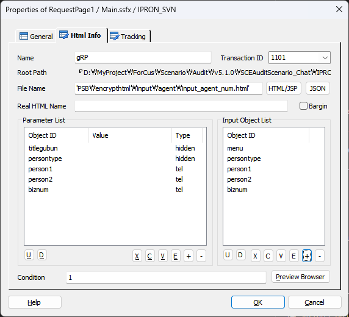
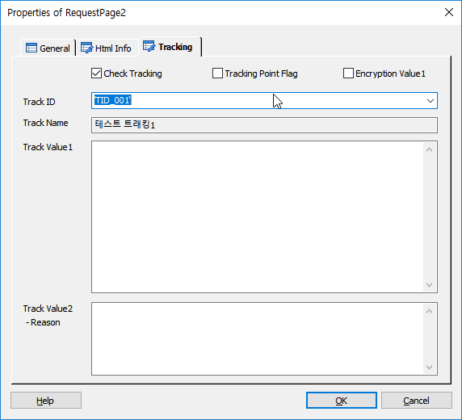

| RequestPage | 시작 다음 이전 |
웹 페이지(HTML 파일)를 화면에 출력 하도록 웹 서버에 요청하는 기능 입니다.
ICON
PROPERTIES
Html Info

Name : 아이템 이름을 입력합니다.(GetPageData Item 에서 사용 합니다)
Transaction ID : TB 에서 전문을 전송할 대상(iWeb-Adapter)을 찾기 위한 서버 키 입니다.(ForCus v5.0.1 이상 부터는 필수 입력)
Root Path : HTML(JSON) 파일이 있는 로컬 디렉토리를 전체 경로로 표시 합니다. 마지막 폴더 이름 인 "\HTML"("\JSON") 은 Web Server 에 실제 HTML(JSON) 파일이 있는 디렉토리와 같아야 합니다. (Local)HTML(JSON) Root Path 는 설정하지 않으면 기본디렉토리로(Project Path 하위에 \HTML(\JSON)) 설정 되며 여기에 지정할 HTML(JSON) 파일들이 있어야 합니다. (Local)HTML(JSON) Root Path 설정은 Tools>Options Web Tab 에서 가능 합니다.
File Name : HTML/JSP 또는 JSON 버튼을 눌러서 선택 한 파일을 표시 또는 사용가 수동으로 입력한 파일이름 입니다.
HTML/JSP Button : HTML/JSP 파일을 선택하여 지정할 수 있습니다.(파일을 선택하지 않고 Parameter List 및 Input Object List 를 수동으로 입력 할 수 있습니다.)
JSON Button : JSON 을 선택하여 지정할 수 있습니다.(파일을 선택하지 않고 Parameter List 및 Input Object List 를 수동으로 입력 할 수 있습니다.)
Real HTML Name : 여기에 지정된 HTML이 실제 Request할 Page입니다.(HTML Only) 지정 하지 않으면 Load한 HTML이 Request됩니다.
Bargin : GetPage Packet 수신시 미디어를 Abort 합니다 (Check :적용, UnCheck : 미적용)
Parameter List
· HTML 파일에 파라미터가 있다면 표시 합니다.
Object ID : HTML 파일에 정의된 파라미터 Object ID 입니다. Value : 각 파라미터에 값을 입력 하는 부분 입니다. 리스트에서 Object ID 를 선택 하고 값을 입력 후 Update Button 을 누르면 됩니다. Type : 파라미터의 타입을 표시하지만 HTML 에 없는 경우도 있고, 있는 경우도 있습니다. 값은 사용하지 않고 참고만 합니다.
※ "HTML/JSP", "JSON" 버튼을 사용하지 않고 수동으로 Parameter 입력 시 아래 버튼을 사용할 수 있다. U Button : 선택한 열을 위로(Up)로 이동합니다. U Button : 선택한 열을 아래로(Down)로 이동합니다. X Button : 선택한 열을 잘라 냅니다.(Ctrl+X) C Button : 선택한 열을 복사 합니다.(Ctrl+C) V Button : 복사한 열을 붙여넣기 합니다.(Ctrl+V) E Button : 선택한 열을 수정 합니다.(Ctrl+E) + Button : Parameter를 추가 합니다. - Button : 선택한 열을 삭제 합니다.
Input Object List
· HTML 파일에 입력 Object ID 가 있을 경우 표시 합니다. 이 값은 GetPageData Item 에서 변수로 사용이 되는데, 웹 페이지에서 입력 받은 값을 넣습니다.
※ "HTML/JSP", "JSON" 버튼을 사용하지 않고 수동으로 Input Object 입력 시 아래 버튼을 사용할 수 있다. U Button : 선택한 열을 위로(Up)로 이동합니다. U Button : 선택한 열을 아래로(Down)로 이동합니다. X Button : 선택한 열을 잘라 냅니다. C Button : 선택한 열을 복사 합니다. V Button : 복사한 열을 붙여넣기 합니다. E Button : 선택한 열을 수정 합니다. + Button : Input Object를 추가 합니다. - Button : 선택한 열을 삭제 합니다.
Preview HTML Button : 지정한 HTML 파일을 미리 볼수 있습니다.(Tools>Options Web Tab 의 Preview HTML Browser 에서 미리 보기할 브라우져 지정)
Condition : 아이템의 실행 조건을 설정 합니다.
Tracking

RequestPage의 요청 하는 Page에 대한 트래킹을 처리합니다.
Check Tracking Check Box : Tracking을 사용 할 것인지를 체크합니다. Tracking Point Flag Check Box : 특별한 Tracking Flag를 설정하여 SWAT에서 트래킹 시에 이 플래그가 설정된 항목만 트래킹 할 수 있습니다. Encryption Value1 Check Box : Track Value1 속성 데이터에 대해서 암호화 처리를 합니다.
Track ID : 정의한 Track ID를 선택하거나 입력 합니다. - DefineTrack Item에 정의된 Track ID가 콤보박스 리스트로 제공됩니다.(Type이 없거나, RequestPage인 경우)
Track Name : Track ID를 선택하면 같이 정의된 이름을 출력합니다.(SWAT에서 이 이름으로 트랙킹 시에 사용합니다.)
Track Value1 : 트래킹 시에 사용할 값을 입력 합니다.(값이 없으면 요청하는 Page 이름이 기본 값이 됩니다.)
Track Value2 :트래킹 시에 사용할 값을 입력 합니다.(결과에 대한 Reason값)
RESULT
· 처리 결과 세션 변수
session.command.result : 처리 성공(_SLEE_SUCCESS_), 실패(_SLEE_FAILED_) session.command.reason : 실패면 실패 오류코드(시스템 상수 참조)
RELATED
|
| Copyrights(C) Bridgetec.co.kr. All Rights Reserved | 시작 다음 이전 |